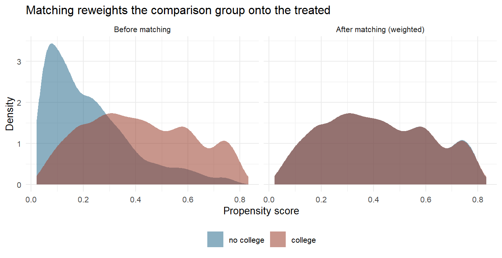
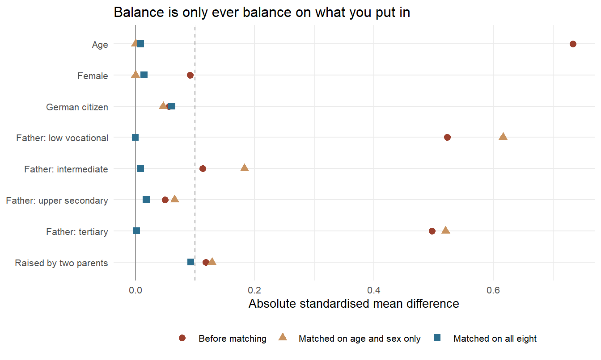

9.2 Matching and Balancing
Propensity-score matching, weighting, and balancing
Section 9.1 ended with a promise and a warning. The promise: propensity-score matching is the reason LaLonde's challenge did not close the file on observational evaluation. The warning: it is the first of the four designs in this chapter because it asks for the most.
Everything here rests on one sentence. Whatever made people take the treatment was measured, and it is sitting in your data set. If that sentence is true, the untreated people who look like a treated person are a legitimate stand-in for what would have happened to her. If it is false, no amount of matching, weighting, trimming or balancing will repair it — and nothing in the output will tell you which world you are in.
That is worth stating at the outset, because matching is unusually good at looking like it worked. It produces a table in which every difference has been driven to zero, and a figure in which two distributions lie on top of one another. Both are true. Neither is evidence for the sentence above.
So this section does something the rest of the book cannot afford to do very often: it works on data we built ourselves, with an effect we chose. The answer is written down before we start. We will not look at it until the very end — and then we will look at it twice, once in a world where the assumption holds and once in a world where it quietly does not.
9.2.1 The Assumption You Cannot Test
Selection on observables has a precise statement, and it comes in three parts.
Definition
Conditional independence (also unconfoundedness, selection on observables, or ignorability): given the covariates \(X\), treatment assignment is independent of the potential outcomes,
\[\left(Y(0),\, Y(1)\right) \perp\!\!\!\perp D \mid X\]
Overlap, or positivity (also common support): every combination of covariates that occurs among the treated could also have occurred among the untreated,
\[0 < P(D = 1 \mid X) < 1 \quad \text{for all } X\]
SUTVA, the stable unit treatment value assumption: one unit's treatment does not affect another unit's outcome, and there is only one version of the treatment.
Conditional independence and overlap together are called strong ignorability. Under them, the selection-bias term of Section 9.1 is zero within each cell of \(X\), and the average treatment effect on the treated is identified as a weighted average of within-cell differences.
The three fail in different ways and are worth keeping apart. Overlap is a property of the data and you can look at it — later in this section we will. SUTVA is a claim about the world that is usually argued rather than tested: a training programme large enough to move local wages violates it, and so does anything that spreads between classmates or colleagues. Conditional independence is also a property of the world, and you cannot look at it at all. There is no test, no diagnostic and no sample size that speaks to it. It is defended by knowing how the treatment was assigned, which means knowing the institution, and that is fieldwork rather than statistics.
A balance table is not a test of conditional independence. It shows that the groups now agree on the variables you matched on. Conditional independence is a claim about the variables you did not match on, including the ones nobody wrote down. The one thing a balance table cannot do is speak about them.
9.2.2 A Wage Premium We Built Ourselves
The running example is a question every reader of this book has a stake in: what does a university degree do to an hourly wage? The data below are simulated, and deliberately so. Section 4.2 makes the general argument for writing a data-generating process by hand; here it earns its keep in a specific way, because it is the only situation in which the right answer to a causal question is available for comparison.
library("MatchIt") # matching and balance diagnostics
library("marginaleffects") # effects and standard errors from a fitted modelsimulate_wages <- function(n = 4000, seed = 42, hidden = 0) {
set.seed(seed)
# --- who people are -------------------------------------------------
age <- round(runif(n, 20, 60))
female <- rbinom(n, 1, 0.48)
german <- rbinom(n, 1, 0.90)
father <- sample(1:5, n, TRUE, prob = c(.10, .42, .19, .06, .23))
feduc2 <- as.integer(father == 2) # father: low vocational
feduc3 <- as.integer(father == 3) # father: intermediate
feduc4 <- as.integer(father == 4) # father: upper secondary
feduc5 <- as.integer(father == 5) # father: tertiary
two_parents <- rbinom(n, 1, 0.84)
siblings <- rpois(n, 1.4)
commute <- round(runif(n, 5, 60))
drive <- rnorm(n) # never handed over
# --- who goes to university -----------------------------------------
enrol <- -4.8 + 0.068 * age - 0.20 * female - 0.35 * german +
0.54 * feduc2 + 1.60 * feduc3 + 1.42 * feduc4 + 2.47 * feduc5 +
0.44 * two_parents - 0.25 * siblings + hidden * drive
college <- rbinom(n, 1, plogis(enrol))
# --- what they would earn without a degree ---------------------------
base <- exp(2.38 + 0.0075 * (age - 40) - 0.20 * female + 0.06 * german +
0.05 * feduc2 + 0.08 * feduc3 + 0.10 * feduc4 +
0.14 * feduc5 + 0.03 * two_parents +
0.22 * hidden * drive + rnorm(n, 0, 0.42))
# --- what a degree does, and to whom ---------------------------------
effect <- 7.45 + 0.13 * (age - 40) - 4.4 * female +
2.4 * feduc4 + 3.5 * feduc5
# --- a mediator: further training, more likely after a degree --------
shock <- runif(n)
train0 <- as.integer(shock < plogis(-0.60 + 0.02 * (age - 40)))
train1 <- as.integer(shock < plogis( 0.70 + 0.02 * (age - 40)))
y0 <- base + 1.1 * train0 # both potential outcomes,
y1 <- base + effect + 1.1 * train1 # for every single person
data.frame(wage = ifelse(college == 1, y1, y0), college,
age, female, german, feduc2, feduc3, feduc4, feduc5,
two_parents, siblings, commute,
training = ifelse(college == 1, train1, train0),
y0, y1)
}
wages <- simulate_wages()
c(rows = nrow(wages), graduates = sum(wages$college), others = sum(!wages$college))
#> rows graduates others
#> 4000 1102 2898Read the function once, then set it aside. Five features of it are the reason it exists.
The answer key. y0 and y1 are both potential outcomes for every person — the thing Section 9.1 called unknowable. They are in the data frame because we made the data. Nothing before Section 9.2.12 touches them.
Selection is real. People with a well-educated father, older people, men and people raised by two parents are much more likely to go to university, and those same characteristics raise the wage on their own. That is confounding, deliberately built.
The effect differs by person. effect is larger for men, for older people, and for children of educated fathers — that is, largest for exactly the people most likely to enrol. This is the essential heterogeneity economists expect, and it is why the ATT, the ATE and the ATC will be three different numbers.
Three traps. commute is noise and predicts nothing. siblings lowers the chance of university and has no effect on wages at all: an instrument, and putting it in the propensity-score model will turn out to be a mistake. training happens after the degree and partly because of it: a mediator, and controlling for it removes part of the effect being estimated.
A hidden confounder, switched off. drive is generated but never returned. With hidden = 0 its coefficient is zero and it does nothing, so conditional independence genuinely holds given the eight measured covariates. Setting hidden = 1 turns it into an unmeasured common cause of enrolment and wages. We will do that once, at the end.
wages %>%
group_by(college) %>%
summarise(n = n(), mean_wage = mean(wage))
#> # A tibble: 2 × 3
#> college n mean_wage
#> <int> <int> <dbl>
#> 1 0 2898 12.9
#> 2 1 1102 21.8Graduates earn €21.79 an hour, non-graduates €12.85. The raw gap is €8.94, and nobody should believe it, for the reason Section 9.1 gave: the people who went to university would have earned more anyway.
lm(wage ~ college + age + female + german +
feduc2 + feduc3 + feduc4 + feduc5 + two_parents, data = wages) %>%
coef() %>% round(3) %>% head(3)
#> (Intercept) college age
#> 7.999 7.185 0.128Regression on the eight covariates brings it to €7.19. Hold on to that number. The rest of this section will produce eight more, and the interesting question is not which is largest but why they differ at all.
9.2.3 The Propensity Score
Matching in eight dimensions is hopeless. Two people can agree on age, sex, citizenship and four education dummies and still be far apart, and the number of covariate cells grows faster than any survey. The propensity score is the trick that makes the problem one-dimensional.
Definition
The propensity score is the conditional probability of receiving the treatment given the covariates,
\[e(X) = P(D = 1 \mid X)\]
Rosenbaum and Rubin proved in 1983 that it is a balancing score: conditional on \(e(X)\), the covariates \(X\) are distributed identically in the treated and untreated groups. If strong ignorability holds given \(X\), it also holds given \(e(X)\) alone.157
Read that twice, because it is the whole engine. You do not have to find someone who matches on eight variables. You have to find someone with the same probability of treatment, and the eight variables balance themselves. An eight-dimensional matching problem collapses to a one-dimensional one, and the price is that the score has to be estimated.
ps_model <- glm(college ~ age + female + german +
feduc2 + feduc3 + feduc4 + feduc5 + two_parents,
data = wages, family = binomial)
wages$pscore <- predict(ps_model, type = "response")
summary(ps_model)$coefficients %>% round(3)
#> Estimate Std. Error z value Pr(>|z|)
#> (Intercept) -4.943 0.284 -17.410 0.000
#> age 0.068 0.004 18.475 0.000
#> female -0.191 0.079 -2.416 0.016
#> german -0.255 0.129 -1.984 0.047
#> feduc2 0.463 0.177 2.609 0.009
#> feduc3 1.412 0.184 7.665 0.000
#> feduc4 1.361 0.223 6.099 0.000
#> feduc5 2.190 0.181 12.122 0.000
#> two_parents 0.362 0.114 3.183 0.001The estimated coefficients are close to the ones written into simulate_wages(), which is reassuring and beside the point. This is the hardest habit to acquire here, so it is worth saying plainly: the propensity-score model is not a model of anything. Nobody will interpret its coefficients, nobody will report its pseudo-\(R^2\), and a variable does not earn its place in it by being significant. It earns its place by being a plausible driver of selection that was measured before the treatment. A logit here is a machine for producing one number per person, and it is judged only by whether that number balances the covariates.
Two variables in wages are there to make that concrete, and both mistakes are common in practice.
set.seed(12345)
trap <- function(formula) {
m <- matchit(formula, data = wages, method = "nearest",
replace = TRUE, estimand = "ATT")
g <- get_matches(m)
avg_comparisons(lm(wage ~ college, data = g, weights = weights),
variables = "college", vcov = ~ subclass + id)
}
X <- ~ age + female + german + feduc2 + feduc3 + feduc4 + feduc5 + two_parents
c(sound = trap(update(X, college ~ .))$estimate,
plus_decoy = trap(update(X, college ~ . + commute))$estimate,
plus_instrument_se = trap(update(X, college ~ . + siblings))$std.error,
sound_se = trap(update(X, college ~ .))$std.error) %>% round(3)
#> sound plus_decoy plus_instrument_se sound_se
#> 7.919 7.836 0.359 0.338The pure decoy commute moves the estimate by about ten cents, which is the matches being reshuffled rather than anything systematic — it predicts neither treatment nor outcome, so it barely enters the score. The instrument siblings is a different matter: it predicts enrolment strongly and the wage not at all, and adding it widens the standard error from €0.35 to €0.36 while buying nothing. In this data set that is the whole cost, because there is no unmeasured confounding left for it to interact with. Section 9.2.12 runs the same comparison in a world where there is, and the cost is no longer a rounding error.
The mediator is the more damaging of the two, and it does its damage in the outcome model rather than in the score. training happens after the degree and partly because of it, so conditioning on it removes the part of the wage effect that runs through further training. In the matched sample, adding it as a control moves the estimate from €7.94 to €7.58 — and the true answer, which we will open in a moment, is €8.12. Nothing in the printout objects. Section 6.4 is about reading logit coefficients; this is the one place in the book where you should not.
9.2.4 Matching on the Score
With one number per person, matching becomes arithmetic: for each graduate, find the non-graduate with the closest score, and compare their wages.
set.seed(12345)
m_nn1 <- matchit(college ~ age + female + german +
feduc2 + feduc3 + feduc4 + feduc5 + two_parents,
data = wages, method = "nearest", distance = "glm",
link = "logit", replace = TRUE, estimand = "ATT")
m_nn1
#> A `matchit` object
#> - method: 1:1 nearest neighbor matching with replacement
#> - distance: Propensity score
#> - estimated with logistic regression
#> - number of obs.: 4000 (original), 1825 (matched)
#> - target estimand: ATT
#> - covariates: age, female, german, feduc2, feduc3, feduc4, feduc5, two_parentsreplace = TRUE allows the same non-graduate to serve as the comparison for several graduates. That choice matters more than it looks. Without replacement, every treated case in the queue takes the best remaining partner, so the last ones in line get whatever is left, and the result depends on the order of the rows. With replacement, each treated case gets the best available partner regardless of who else took it, which reduces bias and costs precision, because the same few controls do a lot of the work.
matched <- get_matches(m_nn1)
fit_nn1 <- lm(wage ~ college, data = matched, weights = weights)
avg_comparisons(fit_nn1, variables = "college", vcov = ~ subclass + id)
#>
#> Estimate Std. Error z Pr(>|z|) S 2.5 % 97.5 %
#> 7.92 0.338 23.5 <0.001 401.6 7.26 8.58
#>
#> Term: college
#> Type: response
#> Comparison: 1 - 0€7.94 an hour, with a standard error of €0.35. Notice what get_matches() returns and match.data() would not: one row per unit per pair, with a subclass identifying the pair and an id identifying the person. Reused controls appear several times, and the standard error has to know that — hence clustering on both.
How much reuse is there?
used <- table(m_nn1$match.matrix[, 1])
c(controls_available = sum(wages$college == 0),
controls_used = length(used),
most_reused = max(used))
#> controls_available controls_used most_reused
#> 2898 723 15Of 2,898 non-graduates, only 670 were ever chosen, and one of them stands in for 15 different graduates. That is not a defect — it is what "closest" means when the comparison pool is thin in the region where the treated live. But it is the reason the effective sample is much smaller than the nominal one, and the reason the standard errors deserve a section of their own.
The matches themselves are excellent. The median absolute difference in propensity score between a graduate and her partner is zero to six decimal places, and 94% of pairs agree to within 0.001. On the score, this is close to an exact match. Whether that means the two people are alike in the ways that matter is a different question, and it is the question of this whole section.
9.2.5 Common Support
Overlap is the half of strong ignorability you can actually inspect. Plot the score by group.

Figure 9.3: Propensity-score distributions before matching and after weighting by the matching weights. In the right-hand panel there is only one visible shape, because the two curves now lie on top of one another - that is what the weights were chosen to do. The place to look is the right-hand tail of the left panel: above a score of about 0.5 the graduates outnumber the non-graduates, and that is where the matching has to work hardest.
c(controls_below_treated_min = sum(wages$pscore[wages$college == 0] <
min(wages$pscore[wages$college == 1])),
treated_above_control_max = sum(wages$pscore[wages$college == 1] >
max(wages$pscore[wages$college == 0])),
controls_above_half = sum(wages$pscore[wages$college == 0] > 0.5),
treated_above_half = sum(wages$pscore[wages$college == 1] > 0.5))
#> controls_below_treated_min treated_above_control_max
#> 1 1
#> controls_above_half treated_above_half
#> 232 386Overlap here is unusually good, which is what happens when the treatment is assigned by a logit you wrote yourself: exactly one graduate sits above every non-graduate and exactly one non-graduate below every graduate. But look at the region above 0.5. There are 386 graduates there and only 232 non-graduates — more than one and a half treated cases chasing every available partner. That is where the reuse comes from, and where an estimate is most fragile.
The standard remedy is a caliper: refuse any match worse than some distance, conventionally 0.2 standard deviations of the logit of the propensity score.158 In this data set the caliper changes nothing, because every match is already far closer than that. When it does bite, though, it does something that is easy to miss.
A caliper drops treated units that find no acceptable partner — and the moment it does, the estimate stops being the ATT. It becomes the average effect for the treated units that happened to have company, usually called the ATO, the average treatment effect in the overlap. That may be the more honest number, since it refuses to extrapolate. It is not the number you set out to estimate, and the change of estimand happens silently: matchit() reports it as a count of unmatched units and nothing else complains.
9.2.6 Balance Is the Diagnostic
Since the propensity-score model is not judged by its coefficients, it has to be judged by something. That something is balance: after matching, do the two groups agree on the covariates?
The standard measure is the standardised mean difference — the difference in means divided by a pooled standard deviation, so that variables on different scales can be read on one axis.
summary(m_nn1, un = TRUE)$sum.matched[, c(1, 2, 3, 6)] %>% round(3)
#> Means Treated Means Control Std. Mean Diff. eCDF Max
#> distance 0.413 0.413 0.000 0.013
#> age 45.641 45.545 0.009 0.016
#> female 0.449 0.456 -0.015 0.007
#> german 0.890 0.909 -0.061 0.019
#> feduc2 0.266 0.266 0.000 0.000
#> feduc3 0.225 0.229 -0.009 0.004
#> feduc4 0.066 0.062 0.018 0.005
#> feduc5 0.402 0.403 -0.002 0.001
#> two_parents 0.873 0.904 -0.093 0.031
Figure 9.4: Absolute standardised mean differences before matching and after two different propensity-score models; the dashed line is the conventional 0.1 threshold. The orange triangles are the lesson: matching on age and sex alone balances age and sex perfectly and leaves the father's education worse than it was to begin with.
Before matching, graduates were on average 7.7 years older than non-graduates — 0.73 standard deviations — and their fathers were far better educated, with standardised differences of \(-0.52\) on the low-vocational category and \(+0.50\) on the tertiary one. After matching on all eight covariates, no absolute standardised difference exceeds 0.093, and the largest of them, on two_parents, sits just inside the conventional line rather than comfortably below it. That is an honest balance table: good, not immaculate.
The fourth column is worth a glance too. The eCDF statistics compare whole distributions rather than means, which matters because two groups can agree on a mean and disagree everywhere else — a bimodal covariate is the standard example. Here the largest eCDF difference is 0.031, so the means are not hiding anything.
Now the orange series in the figure. It comes from a propensity score built on age and sex alone, and it balances age and sex exactly: standardised differences of 0.000, prettier than anything the full model produced. On the father's education it is worse than no matching at all — \(-0.65\) against \(-0.52\) before. Matching does not balance what it was not given, and it can actively make an unused covariate worse while perfecting the ones it was handed. The estimate that comes out of it is €7.77, and it comes with a diagnostic table that looks better than the real one.
Balance is a necessary condition, not a sufficient one, and it is checkable only on the variables you have. A perfect balance table proves that you matched on what you matched on. This is the same sentence as conditional independence is untestable, written in a form you can see.
The rules of thumb are worth quoting with their real provenance, because they get passed around detached from it. The familiar pair — absolute standardised difference below 0.25, variance ratios between 0.5 and 2 — is Elizabeth Stuart's 2010 review.159 Donald Rubin's own 2001 recommendations were stricter: propensity-score means less than half a standard deviation apart, and variance ratios close to one, with 0.5 and 2 described as "far too extreme".160 The 0.1 line used in most software, including the figure above, has no derivation at all. It is a convention, and a defensible one.
9.2.7 Whose Effect Is It?
Section 9.1 introduced the ATT and the ATE as different quantities. Matching makes the difference concrete, because the choice is an argument to the function.
estimand_effect <- function(estimand) {
m <- matchit(college ~ age + female + german + feduc2 + feduc3 +
feduc4 + feduc5 + two_parents,
data = wages, method = "nearest", replace = TRUE,
estimand = estimand)
g <- get_matches(m)
avg_comparisons(lm(wage ~ college, data = g, weights = weights),
variables = "college", vcov = ~ subclass + id)$estimate
}
c(ATT = estimand_effect("ATT"), ATC = estimand_effect("ATC")) %>% round(2)
#> ATT ATC
#> 7.92 5.95The ATT asks what university did for the people who went. The ATC — the effect on the controls, also written ATU — asks what it would have done for the people who did not, and answers it by matching in the other direction: for every non-graduate, find the graduate who looks like her.
The two differ, and the direction is the interesting part. €7.94 for those who went, €5.91 for those who did not. Whatever selection is going on, it is not merely that the university-bound had better backgrounds; they also appear to gain more from the degree than the others would have. So the naive €8.94, the ATT €7.94 and the ATC €5.91 are three answers to three different questions, and reporting one of them as "the" effect of university is a category error.
Effect heterogeneity does not stop at treated versus untreated. Splitting by sex and matching within each group:
catt <- function(sex) {
d <- wages %>% filter(female == sex)
m <- matchit(college ~ age + german + feduc2 + feduc3 + feduc4 +
feduc5 + two_parents,
data = d, method = "nearest", replace = TRUE, estimand = "ATT")
g <- get_matches(m)
avg_comparisons(lm(wage ~ college, data = g, weights = weights),
variables = "college", vcov = ~ subclass + id)$estimate
}
c(men = catt(0), women = catt(1)) %>% round(2)
#> men women
#> 9.68 5.55€9.82 for men, €5.43 for women. Section 6.5 makes the same move inside a regression; here it is made by estimating the whole thing twice, which is more flexible — every covariate is allowed to matter differently by sex — and more expensive in sample.
A conditional effect estimated this way is a subgroup analysis, with all the usual hazards. The split has to be decided before the data are opened, on a pre-treatment variable, and it has to be one split rather than the best of twenty. Sex qualifies. "Respondents in the Eastern states aged over 45 whose fathers were skilled workers" does not.
9.2.8 Weighting Instead of Discarding
Matching throws data away: 2,228 of the 2,898 non-graduates were never used. Weighting keeps everybody and adjusts how much each person counts.
Definition
Inverse probability weighting (IPW) weights each observation by the reciprocal of the probability of the treatment it actually received. For the ATE,
\[w_i^{\text{ATE}} = \frac{D_i}{e(X_i)} + \frac{1 - D_i}{1 - e(X_i)}\]
For the ATT, the treated keep a weight of one and the untreated are reweighted into the treated distribution,
\[w_i^{\text{ATT}} = D_i + (1 - D_i)\,\frac{e(X_i)}{1 - e(X_i)}\]
A treated case with a low score was unlikely to be treated, so it stands for many similar people and counts heavily. Matching is the special case in which the weights are integers and most of them are zero.
wages <- wages %>%
mutate(w_att = college + (1 - college) * pscore / (1 - pscore),
w_ate = college / pscore + (1 - college) / (1 - pscore))
avg_comparisons(lm(wage ~ college, data = wages, weights = w_att),
variables = "college", vcov = "HC3")
#>
#> Estimate Std. Error z Pr(>|z|) S 2.5 % 97.5 %
#> 7.97 0.28 28.4 <0.001 588.7 7.42 8.52
#>
#> Term: college
#> Type: response
#> Comparison: 1 - 0
avg_comparisons(lm(wage ~ college, data = wages, weights = w_ate),
variables = "college", vcov = "HC3")
#>
#> Estimate Std. Error z Pr(>|z|) S 2.5 % 97.5 %
#> 6.17 0.361 17.1 <0.001 215.3 5.47 6.88
#>
#> Term: college
#> Type: response
#> Comparison: 1 - 0€7.97 for the ATT and €6.17 for the ATE. The ATT figure is almost exactly what matching gave, and a little more precise, which is what using all the data buys.
The bill arrives as weight concentration. A useful summary is the effective sample size, \(\left(\sum w_i\right)^2 / \sum w_i^2\): the number of equally weighted observations that would carry as much information.
ess <- function(w) sum(w)^2 / sum(w^2)
c(controls_nominal = sum(wages$college == 0),
ess_att_weights = ess(wages$w_att[wages$college == 0]),
ess_ate_weights = ess(wages$w_ate[wages$college == 0]),
largest_ate_weight = max(wages$w_ate)) %>% round(0)
#> controls_nominal ess_att_weights ess_ate_weights largest_ate_weight
#> 2898 1098 2575 45Under ATT weights, 2,898 non-graduates carry the information of about 1,098. That is more than the 670 matching used, and it is the honest accounting: weighting does not conjure precision, it spreads the same scarcity more smoothly.
Watch the extremes. The largest ATE weight in this data set is 45 — one person counting for forty-five. As a score approaches zero or one the weight explodes, and a single observation can move the estimate. The usual responses are to trim at the 1st and 99th percentiles, to stabilise the weights by multiplying by the marginal treatment probability, or to switch to overlap weights, \(e(X)(1-e(X))\), which are bounded by construction and estimate the effect in the region where the groups actually meet. Whichever you choose, report the weight distribution. An estimate resting on one person with a weight of forty-five is a fact about that person.
9.2.9 Two Chances to Be Right
So far the propensity-score model has done all the work. There is a second model available — one for the outcome — and using both is better than using either.
Definition
A doubly robust estimator combines a treatment model and an outcome model in such a way that it is consistent if either one is correctly specified. In economics the weighting version is usually called IPWRA (inverse probability weighting with regression adjustment); the statistics literature calls the general form AIPW (augmented IPW).161
You do not get to know which of the two models is the right one. That is the point: you get two chances instead of one.
dr_fit <- lm(wage ~ college * (age + female + german + feduc2 + feduc3 +
feduc4 + feduc5 + two_parents),
data = wages, weights = w_att)
avg_comparisons(dr_fit, variables = "college",
newdata = subset(wages, college == 1),
wts = "w_att", vcov = "HC3")
#>
#> Estimate Std. Error z Pr(>|z|) S 2.5 % 97.5 %
#> 7.95 0.242 32.9 <0.001 787.1 7.48 8.43
#>
#> Term: college
#> Type: response
#> Comparison: 1 - 0€7.95. The same idea works on a matched sample rather than a weighted one — fit the outcome model inside the matched data with the matching weights — and that combination is the practical recommendation of the modern literature: match or weight to get the groups comparable, then regress to mop up whatever imbalance is left.162
Double robustness is often oversold as "two models, so relax". Kang and Schafer showed the opposite failure mode: when both models are slightly wrong — which is the realistic case — several doubly robust estimators did worse than plain regression, especially with propensity scores near zero.163 Two wrong models are not better than one. What double robustness buys is insurance against one specific mistake, not against being wrong in general.
9.2.10 Standard Errors After Matching
Every number above came with a standard error, and matching standard errors are harder than they look. Three results are worth knowing, all of them from Alberto Abadie and Guido Imbens.
First, matching estimators with a fixed number of neighbours carry a bias term that does not vanish fast enough. With one continuous covariate it is negligible; with two it is of the same order as the sampling error; with three or more the estimator is not \(\sqrt{n}\)-consistent at all, and a bias correction is needed.164 Matching on the propensity score — a single continuous number — is one of the reasons the propensity score is popular.
Second, the propensity score was estimated, and pretending otherwise is not innocent. For the ATE, ignoring the first stage gives conservative intervals. For the ATT the sign of the correction depends on the data-generating process, so the intervals may be too wide or too narrow.165
Third, and most usefully for anyone who learned this in a Stata course: the bootstrap does not work here. Abadie and Imbens proved in 2008 that the standard bootstrap is not valid for nearest-neighbour matching estimators with a fixed number of matches, even in the simplest well-behaved case, and that its variance can be biased in either direction.166 The reason is the extreme non-smoothness of the estimator: resampling changes who is matched to whom, discontinuously.
The one place the bootstrap fails
The bootstrap is the closest thing applied statistics has to a universal tool. Resample the data with replacement, recompute the statistic, look at the spread of the answers — and you have a standard error for a median, a ratio, a quantile regression, or anything else whose sampling distribution nobody has ever written down. It is the natural reflex whenever a formula is unavailable, and it almost never lets you down.
Nearest-neighbour matching is the standard counterexample, and it is in every serious treatment of the bootstrap for that reason. The estimator depends on the data through a discrete operation — which unit is nearest — and the bootstrap's asymptotic argument needs enough smoothness that a small perturbation of the sample produces a small perturbation of the statistic. Draw a bootstrap sample and a control that was used once is now used three times or not at all. The number moves in jumps.
What to do instead: the analytic variance estimator of Abadie and Imbens, implemented in Stata's teffects and in R's Matching package; subsampling; or the \(m\)-out-of-\(n\) bootstrap. Or, for propensity-score weighting rather than matching, ordinary robust standard errors, which is one more argument for weighting.
The cluster-robust errors used throughout this section — clustering on the pair and on the unit — are the pragmatic choice for matching with replacement, and they are conservative in the right direction.167 They are not exact. Nobody's are.
9.2.11 Nine Answers to the Same Question
Everything in one table.
| Estimator | Estimate | Std. error | Answers about |
|---|---|---|---|
| Raw difference in means | 8.94 | 0.25 | nobody |
| OLS with the eight covariates | 7.19 | 0.23 | a variance-weighted average |
| NN(1) matching, with replacement | 7.92 | 0.34 | the treated |
| NN(1) matching, no replacement | 8.03 | 0.27 | the treated |
| NN(10) matching, with replacement | 7.98 | 0.28 | the treated |
| IPW, ATT weights | 7.97 | 0.28 | the treated |
| IPW + regression adjustment | 7.95 | 0.24 | the treated |
| IPW, ATE weights | 6.17 | 0.36 | everybody |
| NN(1) matching, ATC instead of ATT | 5.95 | 0.51 | the untreated |
Two things to read off it. The five estimators that target the treated span barely ten cents, and even OLS is within a euro — while the raw comparison sits a euro above every one of them and the ATC two euros below the ATT. Under selection on observables, the choice of algorithm is a second-order decision, and the choice of estimand is not.
That is reassuring, and it is also the trap. Agreement among methods that share an assumption is not evidence for the assumption. All nine would agree just as amicably if it were false — which is exactly what the next section demonstrates.
9.2.12 Opening the Envelope
Now the part no real study gets. The data frame has carried y0 and y1 all along.
effects <- wages$y1 - wages$y0
truth <- c(ATE = mean(effects),
ATT = mean(effects[wages$college == 1]),
ATC = mean(effects[wages$college == 0]))
round(truth, 3)
#> ATE ATT ATC
#> 6.582 8.121 5.997The true average effect on the treated is €8.12, the true ATE €6.58, and the true ATC €6.00. Line those up against the table.
| Estimator | Estimate | Truth | Error |
|---|---|---|---|
| Raw difference in means | 8.94 | NA | NA |
| OLS with the eight covariates | 7.19 | NA | NA |
| NN(1) matching, with replacement | 7.92 | 8.12 | -0.20 |
| NN(1) matching, no replacement | 8.03 | 8.12 | -0.09 |
| NN(10) matching, with replacement | 7.98 | 8.12 | -0.14 |
| IPW, ATT weights | 7.97 | 8.12 | -0.15 |
| IPW + regression adjustment | 7.95 | 8.12 | -0.17 |
| IPW, ATE weights | 6.17 | 6.58 | -0.41 |
| NN(1) matching, ATC instead of ATT | 5.95 | 6.00 | -0.04 |
Every estimator that takes selection seriously lands within half a euro of the quantity it was aiming at. That is not luck, and it is not a property of this particular draw — repeat the whole exercise on fresh samples and the errors centre on zero.
error_study <- function(hidden = 0, reps = 200, n = 1500) {
errors <- replicate(reps, {
d <- simulate_wages(n = n, seed = sample(1e6, 1), hidden = hidden)
m <- matchit(update(X, college ~ .), data = d,
method = "nearest", replace = TRUE, estimand = "ATT")
g <- get_matches(m)
coef(lm(wage ~ college, data = g, weights = weights))[[2]] -
mean((d$y1 - d$y0)[d$college == 1])
})
c(mean_error = mean(errors), sd_error = sd(errors))
}
set.seed(2026)
round(error_study(hidden = 0), 3)
#> mean_error sd_error
#> -0.025 0.585Across 200 fresh data sets the average error is under two cents, with a spread of about sixty. The estimator is doing exactly what it claims: when conditional independence holds, matching on the measured covariates recovers the effect.
Now change one thing.
shadow <- simulate_wages(hidden = 1)
m_shadow <- matchit(update(X, college ~ .), data = shadow,
method = "nearest", replace = TRUE, estimand = "ATT")
c(true_ATT = mean((shadow$y1 - shadow$y0)[shadow$college == 1]),
raw_gap = diff(tapply(shadow$wage, shadow$college, mean))[[1]],
matched = coef(lm(wage ~ college, data = get_matches(m_shadow),
weights = weights))[[2]],
worst_smd = max(abs(summary(m_shadow)$sum.matched[-1, "Std. Mean Diff."]))
) %>% round(3)
#> true_ATT raw_gap matched worst_smd
#> 7.907 10.936 10.215 0.092hidden = 1 switches on drive — one unmeasured trait that raises both the chance of enrolling and the wage. Nothing else changes. The same eight covariates are measured, the same code runs, the propensity score is estimated the same way.
The true effect on the treated is €7.91. Matching returns €10.10. It is wrong by more than five standard errors, and the worst standardised mean difference after matching is 0.092 — the balance table is, if anything, slightly better than the one we admired earlier.
Run the same 200 replications in this world and the error does not average out.
A bias of about +€2.5, with a spread much like before. It is not noise. It is the design.
Read those two code blocks together. They differ by one argument. Everything a referee can inspect — the overlap figure, the balance table, the standard errors, the agreement across algorithms — is indistinguishable between them. One answer is right and the other is wrong by 28%, and no diagnostic in this section can tell them apart. That is what "the assumption is untestable" means in practice, and it is why Section 9.1 put this design last in credibility and first in the chapter.
And this is where the instrument from Section 9.2.3 stops being a rounding error.
amplified <- matchit(update(X, college ~ . + siblings), data = shadow,
method = "nearest", replace = TRUE, estimand = "ATT")
c(without_siblings = coef(lm(wage ~ college, data = get_matches(m_shadow),
weights = weights))[[2]],
with_siblings = coef(lm(wage ~ college, data = get_matches(amplified),
weights = weights))[[2]]) %>% round(3)
#> without_siblings with_siblings
#> 10.215 10.570Adding a variable that predicts enrolment and nothing else pushes the estimate from €10.10 to €10.56 — further from the truth, not closer. This is bias amplification: conditioning on a strong predictor of treatment squeezes out the variation in enrolment that was unrelated to drive, so what remains is a comparison driven more purely by the confounder.168 The variable looked like a good control. It made things worse, and it improved the balance table while doing so.
Truly Dedicated: how strong would the confounder have to be?
In a real study you cannot run hidden = 1 and compare. What you can do is ask how strong an unmeasured confounder would have to be. The E-value answers exactly that: the minimum strength of association, on the risk-ratio scale, that an unmeasured confounder would need with both the treatment and the outcome, over and above the measured covariates, to explain the estimate away.169
For a continuous outcome the standard approximation goes through the standardised effect size \(d\): convert to an approximate risk ratio with \(\text{RR} \approx \exp(0.91 \, d)\), then
\[\text{E-value} = \text{RR} + \sqrt{\text{RR}\,(\text{RR} - 1)}\]
att <- coef(fit_nn1)[["college"]]
d <- att / sd(matched$wage)
rr <- exp(0.91 * d)
c(d = d, risk_ratio = rr, e_value = rr + sqrt(rr * (rr - 1))) %>% round(2)
#> d risk_ratio e_value
#> 1.02 2.52 4.49An E-value of 4.5 says a confounder would have to be strongly associated with both enrolment and wages before the €7.94 could be fully explained away. That is a substantive judgement, not a statistical one — and it is a judgement a reader can argue with, which is more than a balance table offers.
The matched-pairs analogue is Rosenbaum bounds: how large an odds ratio \(\Gamma\) of differential treatment assignment within a matched pair would be needed before the result stops being significant.170 Same question, asked of pairs rather than populations. Neither is a test — no data can test this — and both are ways of making the untestable assumption quantitative enough to discuss.
9.2.13 What Matching Cannot Do
Simulated data can show that an estimator works when its assumption holds and fails when it does not. What it cannot show is whether the assumption holds in any particular real study. For that the field has one genuine experiment to check against, and it is the one Section 9.1 ended on.
Dehejia and Wahba took LaLonde's data, applied propensity-score matching, and recovered estimates close to the experimental benchmark — the result that made the method's reputation and put it into every applied econometrics course.171 Smith and Todd then showed how much that success depended on which subsample, which covariates and which specification, and that the method did not perform nearly as well on other subsamples of the same data.172 Both papers are right. The lesson is not that matching works or fails, but that it worked there, with those covariates — including two years of pre-treatment earnings, which is an unusually good proxy for the drive of the world.
Two further critiques belong here.
The propensity-score paradox. Gary King and Richard Nielsen argue that propensity-score matching approximates a completely randomised experiment rather than a blocked one, and that as you prune more observations to improve the score match, imbalance on the covariates themselves can start to increase — along with model dependence and bias.173 Their recommendation is to match on the covariates directly, for instance with coarsened exact matching: bin each covariate into substantively sensible ranges, match exactly on the bins, and drop the cells that contain only one group.174 The appeal is that balance is guaranteed by construction rather than checked afterwards. The cost is the curse of dimensionality that the propensity score was invented to escape.
Weighting without a score at all. If the goal is balance, one can optimise for it directly: entropy balancing chooses weights that reproduce the treated group's covariate means exactly, subject to staying as close to uniform as possible.175 When it converges, there is no balance table to inspect, because the means agree by construction. Whether that is a virtue or a lost diagnostic is a matter of taste, and it does nothing whatever about drive.
Matching is a transparency technology, not an identification strategy. It does not make a causal claim credible; it makes the comparison behind an existing claim visible — which units were compared, which had no counterpart, which covariates were balanced and which were merely hoped about. That is genuinely valuable, and it is a smaller claim than the literature's enthusiasm sometimes suggests.
Regression does the same arithmetic with different weights and hides all of it.176 Given a choice, prefer the method that shows you the comparison.
Your Turn
The raw wage gap was €8.94, the matched estimate €7.94, and the true effect on the treated €8.12.
The raw comparison overstates the true ATT by about euros.
A colleague reports a balance table in which every standardised difference is below 0.01 and concludes that the conditional-independence assumption holds. What is wrong with the inference?
In the hidden = 1 world the balance table was as good as in the hidden = 0 world, and the estimate was wrong by €2.19. What does that demonstrate?
Adding siblings — a strong predictor of enrolment with no effect on wages — moved the estimate further from the truth. Why?
You match with replacement and one control is used fifteen times. What must the standard error account for?
True or false: bootstrapping is a safe way to get standard errors for nearest-neighbour matching.
Reading
Two practical papers, both free. Marco Caliendo and Sabine Kopeinig's implementation guide walks through every decision in this section in the order you meet it, with the economics literature attached.177 Elizabeth Stuart's review does the same from the statistics side and is the clearest source on balance diagnostics.178 For the code, the MatchIt vignettes by Noah Greifer are the current reference; chapter 5 of Cunningham's Mixtape covers the same ground with the LaLonde data of Section 9.1 (Cunningham, 2021).
Selection on observables buys comparability with the covariates you have, and it is the only design in this chapter whose central assumption cannot be inspected at all. This section could show the assumption failing only because the data were invented; in a real study the two worlds are indistinguishable from the output.
Do it anyway when nothing better is available — but report the overlap, report the balance, report several algorithms, say which estimand you chose, and say how large the unmeasured confounder would have to be. Then look for a design that does not need the assumption at all. Section 9.3 is the first of those: it builds comparability out of timing rather than covariates, which lets the unobservables stay unobserved as long as they are constant.
Readings
- Caliendo, M., & Kopeinig, S. (2008). Some Practical Guidance for the Implementation of Propensity Score Matching. Journal of Economic Surveys 22(1), 31-72. The applied economist's checklist.
- Stuart, E. A. (2010). Matching Methods for Causal Inference: A Review and a Look Forward. Statistical Science 25(1), 1-21. The statistician's version, and the source of the balance rules of thumb.
- Imbens, G. W., & Rubin, D. B. (2015). Causal Inference for Statistics, Social, and Biomedical Sciences. Cambridge University Press. Part III is matching at full length.
- Guo, S., & Fraser, M. W. (2014). Propensity Score Analysis: Statistical Methods and Applications, 2nd ed. Sage. Long on worked examples.
- Greifer, N.
MatchIt,WeightItandcobaltpackage documentation. The three R packages that cover this section and the balance plots it draws by hand.
Rosenbaum, P. R., & Rubin, D. B. (1983). The Central Role of the Propensity Score in Observational Studies for Causal Effects. Biometrika 70(1), 41-55, https://doi.org/10.1093/biomet/70.1.41. Theorems 1 to 4 establish that the propensity score is a balancing score and the coarsest one.↩︎
Austin, P. C. (2011). Optimal Caliper Widths for Propensity-Score Matching When Estimating Differences in Means and Differences in Proportions in Observational Studies. Pharmaceutical Statistics 10(2), 150-161, https://doi.org/10.1002/pst.433. The recommendation is a caliper of 0.2 standard deviations of the logit of the propensity score, which removed at least 98% of the bias in his simulations.↩︎
Stuart, E. A. (2010). Matching Methods for Causal Inference: A Review and a Look Forward. Statistical Science 25(1), 1-21, https://doi.org/10.1214/09-STS313. The 0.25 and 0.5-to-2 thresholds are stated on page 11, citing Rubin (2001).↩︎
Rubin, D. B. (2001). Using Propensity Scores to Help Design Observational Studies: Application to the Tobacco Litigation. Health Services and Outcomes Research Methodology 2, 169-188, https://doi.org/10.1023/A:1020363010465.↩︎
Robins, J. M., Rotnitzky, A., & Zhao, L. P. (1994). Estimation of Regression Coefficients When Some Regressors Are Not Always Observed. Journal of the American Statistical Association 89(427), 846-866, https://doi.org/10.1080/01621459.1994.10476818. The augmented estimator originates here; the property was first noted explicitly in the rejoinder of Scharfstein, D. O., Rotnitzky, A., & Robins, J. M. (1999), Journal of the American Statistical Association 94(448), 1096-1120 with rejoinder at 1135-1146, https://doi.org/10.1080/01621459.1999.10473862, and the label doubly robust was popularised by Bang, H., & Robins, J. M. (2005), Doubly Robust Estimation in Missing Data and Causal Inference Models, Biometrics 61(4), 962-973, https://doi.org/10.1111/j.1541-0420.2005.00377.x.↩︎
Ho, D. E., Imai, K., King, G., & Stuart, E. A. (2007). Matching as Nonparametric Preprocessing for Reducing Model Dependence in Parametric Causal Inference. Political Analysis 15(3), 199-236, https://doi.org/10.1093/pan/mpl013. The
MatchItpackage that implements it is Ho, Imai, King and Stuart (2011), Journal of Statistical Software 42(8), 1-28, https://doi.org/10.18637/jss.v042.i08.↩︎Kang, J. D. Y., & Schafer, J. L. (2007). Demystifying Double Robustness: A Comparison of Alternative Strategies for Estimating a Population Mean from Incomplete Data. Statistical Science 22(4), 523-539, https://doi.org/10.1214/07-STS227.↩︎
Abadie, A., & Imbens, G. W. (2006). Large Sample Properties of Matching Estimators for Average Treatment Effects. Econometrica 74(1), 235-267, https://doi.org/10.1111/j.1468-0262.2006.00655.x. The conditional bias is of order \(n^{-1/k}\) with \(k\) the number of continuous covariates.↩︎
Abadie, A., & Imbens, G. W. (2016). Matching on the Estimated Propensity Score. Econometrica 84(2), 781-807, https://doi.org/10.3982/ECTA11293.↩︎
Abadie, A., & Imbens, G. W. (2008). On the Failure of the Bootstrap for Matching Estimators. Econometrica 76(6), 1537-1557, https://doi.org/10.3982/ECTA6474. Worked out for one match per treated unit; the bootstrap variance can be too large or too small depending on the ratio of treated to control units.↩︎
Greifer, N. Estimating Effects After Matching,
MatchItpackage vignette. Its default recommendation is ordinary robust (HC3) standard errors on the output ofmatch.data(), following Hill, J., & Reiter, J. P. (2006), Interval Estimation for Treatment Effects Using Propensity Score Matching, Statistics in Medicine 25(13), 2230-2256, https://doi.org/10.1002/sim.2277. The two-way clustering used here - onget_matches()output, clustering on pair and unit - is presented there as an alternative that adjusts for the reuse of controls, with the caveat that the supporting evidence, Austin, P. C., & Cafri, G. (2020), Statistics in Medicine 39(11), 1623-1640, is for survival outcomes.↩︎Wooldridge, J. M. (2016). Should Instrumental Variables Be Used as Matching Variables? Research in Economics 70(2), 232-237, https://doi.org/10.1016/j.rie.2016.01.001. The short answer is no: adding such a variable increases the inconsistency of the estimate, and Wooldridge shows that a propensity score built on instruments maximises it among regression-type estimators. See also Bhattacharya, J., & Vogt, W. B. (2007), Do Instrumental Variables Belong in Propensity Scores?, NBER Technical Working Paper 343, and Brookhart, M. A., et al. (2006), Variable Selection for Propensity Score Models, American Journal of Epidemiology 163(12), 1149-1156, https://doi.org/10.1093/aje/kwj149, for the variance cost.↩︎
VanderWeele, T. J., & Ding, P. (2017). Sensitivity Analysis in Observational Research: Introducing the E-Value. Annals of Internal Medicine 167(4), 268-274, https://doi.org/10.7326/M16-2607. The formula assumes a risk ratio above one; for a protective effect one takes the reciprocal first. The conversion from a standardised mean difference rests on the logistic effect-size result that \(\text{OR} \approx \exp(1.81\,d)\) - Chinn, S. (2000), Statistics in Medicine 19(22), 3127-3131, where \(1.81 = \pi/\sqrt{3}\) - combined with the square-root approximation of a risk ratio from an odds ratio for a common outcome, VanderWeele, T. J. (2017), Epidemiology 28(6), e58. Halving 1.81 is where the 0.91 comes from. It is implemented in the
EValuepackage.↩︎Rosenbaum, P. R. (2002). Observational Studies, 2nd edition, Springer, chapter 4. The method itself is older: Rosenbaum, P. R., & Rubin, D. B. (1983), Assessing Sensitivity to an Unobserved Binary Covariate in an Observational Study with Binary Outcome, Journal of the Royal Statistical Society B 45(2), 212-218.↩︎
Dehejia, R. H., & Wahba, S. (1999). Causal Effects in Nonexperimental Studies: Reevaluating the Evaluation of Training Programs. Journal of the American Statistical Association 94(448), 1053-1062, https://doi.org/10.1080/01621459.1999.10473858; and Dehejia, R. H., & Wahba, S. (2002). Propensity Score-Matching Methods for Nonexperimental Causal Studies. Review of Economics and Statistics 84(1), 151-161, https://doi.org/10.1162/003465302317331982.↩︎
Smith, J. A., & Todd, P. E. (2005). Does Matching Overcome LaLonde's Critique of Nonexperimental Estimators? Journal of Econometrics 125(1-2), 305-353, https://doi.org/10.1016/j.jeconom.2004.04.011.↩︎
King, G., & Nielsen, R. (2019). Why Propensity Scores Should Not Be Used for Matching. Political Analysis 27(4), 435-454, https://doi.org/10.1017/pan.2019.11.↩︎
Iacus, S. M., King, G., & Porro, G. (2012). Causal Inference without Balance Checking: Coarsened Exact Matching. Political Analysis 20(1), 1-24, https://doi.org/10.1093/pan/mpr013.↩︎
Hainmueller, J. (2012). Entropy Balancing for Causal Effects: A Multivariate Reweighting Method to Produce Balanced Samples in Observational Studies. Political Analysis 20(1), 25-46, https://doi.org/10.1093/pan/mpr025. Implemented in R as
WeightIt::weightit(method = "ebal").↩︎Angrist, J. D., & Pischke, J.-S. (2009). Mostly Harmless Econometrics. Princeton University Press, section 3.3.1. The regression estimand is a weighted average of covariate-cell contrasts with weights proportional to the conditional variance of treatment; the matching estimand weights by the covariate distribution among the treated. Same data, same covariates, different weighting - and only one of them prints the weights.↩︎
Caliendo, M., & Kopeinig, S. (2008). Some Practical Guidance for the Implementation of Propensity Score Matching. Journal of Economic Surveys 22(1), 31-72, https://doi.org/10.1111/j.1467-6419.2007.00527.x.↩︎
Stuart, E. A. (2010). Matching Methods for Causal Inference: A Review and a Look Forward. Statistical Science 25(1), 1-21, https://doi.org/10.1214/09-STS313. The 0.25 and 0.5-to-2 thresholds are stated on page 11, citing Rubin (2001).↩︎